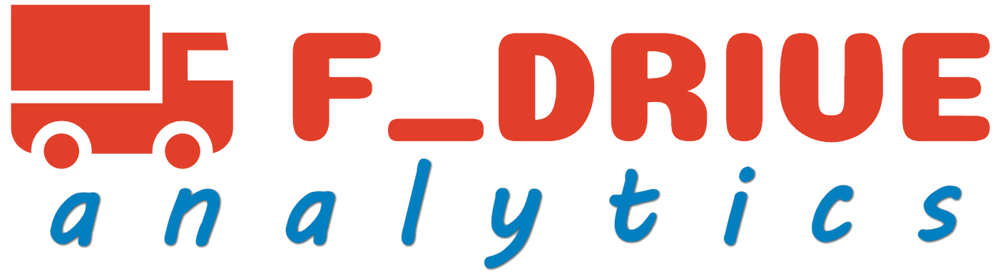

Sajnálom, a keresett adat már nem elérhető
A választott időszak lezárult.
Egyedi lekérdezés igénye esetén fordulj hozzám bizalommal – szívesen segítek.

A választott időszak lezárult.
Egyedi lekérdezés igénye esetén fordulj hozzám bizalommal – szívesen segítek.